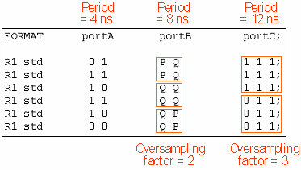

Discarding Oversampled Vector Data
The vector data of simulation have the same period for all pins. If a device runs with different ports at different speeds, this implies that the simulation data for the slower ports are oversampled, that is, the same vector is repeated for them as often as the period of the fastest port fits into the period of the respective slower port. For example, if the fastest port runs at 4 ns, and another port runs at 12 ns, then every vector for the latter port will occur three times in the simulation vector data. The following figure shows an example of an ASCII vector file that is oversampled in this way:

The ASCII interface is able to discard such a port specific oversampling. In order to make use of this feature, you must first convert the simulation data into an (oversampled) ASCII vector file, as shown in the previous figure. The vector translation processes this ASCII vector file in two steps. First, it creates separate ASCII vector files for the individual ports out of the oversampled source; in these files, the redundant vectors of the source file are removed. You can select whether the ASCII target files are stored or discarded after being processed. In the second step, the ASCII target files are translated into a binary vector file.
The ports in question must be defined in the pin configuration file. The information how the oversampled vectors are to be processed is passed to the vector translation in an oversampling map file.